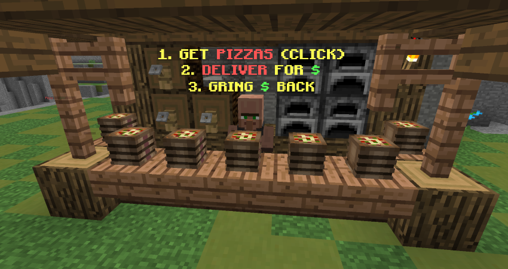

|
The Pit 0.3.7 - Pizza Patch
|
|  |
| A screenshot of the pizza delivery stand. |
| Release Date | July 23rd, 2018 |
Forums Approval*Forums approval is based on the number of positive reactions on the update's forum post divided by the number of total reactions.
Reactions only count if they were added in the first month of the post being up. | 97.0% |
| Forums Author | Minikloon |
| ← Fishing Club Patch —
Recent bugfixes
→
|
The Pit 0.3.7, also known as the Pizza Patch, was the sixth major version of the Hypixel Pit. It introduced the Pizza and Dragon Egg events, new perks – such as Soup – more renown upgrades, and other minor changes.
The following perks were added to the game:
- Conglomerate
- Yummy, with consumed golden apples and heads granting 2 gold
- Soup, with the following effects:
- Speed I (+0:04), maximum of 1 minute
- Regeneration I (0:05)
- 1♥︎ of absorption
- The user's next melee hit would deal +12% damage for 6 seconds. Drinking another soup in that timeframe would reset the 6 second timer and grant the user an additional +5% damage (maximum of 9 soups, +52% damage).
- Players received soups on both kills and assists.
Additionally, the renown upgrades Armory and Apollo were introduced.
Drop protection was also added. Before dropping any mystic item, players needed to click on a chat message to confirm that they wanted to drop it.
Mystic items earned through Mysticism now have temporary exclusivity. The following features were added to help prevent stealing mystic item drops:
- Added a sound and particle effect that appears when Mysticism triggers.
- For 10 seconds, only the player that triggered Mysticism can claim the dropped mystic item. All other players are unable to see the item for those 10 seconds.
Pizza (introduced as "Pizza Place") and Dragon Egg were added to the game. Additionally, Robbery was updated with the following new game mechanics:
- (↑) Retain 0% → 25% of your stash on death.
- (↓) Changed maximum stash size (unlimited → 10,000g).
- (↓) Disabled /spawn while the event is active.
- (↓) Decreased the amount of gold stolen per hit – decreased by "a lot" on ranged hit.
Balance changes:
- (↑) Reduced the cooldown of Combo: Stun (10 → 8 seconds)[correct interpretation?].
- (↑) Increased the duration of Weakness applied by Crush by 0.5 seconds per tier[old amounts?].
- (~) Changed Trickle-down from 7× gold to +10 gold with an added heal of +2♥︎.
- (~) Changed Vampire's on-kill healing (Regeneration II (0:05) → Regeneration I (0:08)).
- (~) Changed Golden Heads's on-kill healing (Regeneration I (0:08) → Regeneration II (0:05)).
- (~) The time before a player is considered "in combat" now increases by 10 seconds for every 1,000g in the player's bounty.
- (~) "Fixed & re-balanced" The Blob.
- (↓) Increased Singularity's damage limit (???????? → ?????????).
- (↓) Added a 5 second*RARE! Explosive II's cooldown is 3 seconds. The other tiers of Explosive function normally. cooldown to Explosive and disabled its usage during major events.
- (↓) Added a 45 second cooldown to the Revitalize enchantment.
- (↓) Added a 1 second cooldown to the Mega Longbow enchantment.
- (↓) Significantly reduced the amount of damage creepers from the Martyrdom enchantment deal.
- (↓) Disabled The Punch during major events.
- (↓) Using Telebow now puts the player "in combat."
- (↓) Reduced the maximum number of wolves from Wolf Pack.
- (↓) Decreased the damage of the lightning strike ability of Combo: Perun's Wrath (I: 2♥︎ → 1.5♥︎, II: 3♥︎ → 2♥︎).
- (↓) Reduced the regeneration tier of Gomraw's Heart (V → IV).
Other changes:
- Added proper display of Robbery renown rewards.
- Added a message on the sidebar when a player has a bounty.
- Fixed Mirror II and III not blocking true damage as intended.
- Fixed bugs relating to enchantments giving items on kill.
- Fixed Executioner killing players at more than 2♥︎.
- Added a message to the Pin down enchantment that is broadcasted to the attacker when it successfully removes Speed.
- Fixed True Shot and Shark dealing too much damage.
- Fixed Strike Gold for bows.
- Fixed the "throw a player down the void" contract.
- Fixed Recon giving 44 XP instead of 40 XP.
- Slime launchers aimed at a King of the Hill will take players to random locations on the platform instead of the direct center.
- Fixed Rage Pit clearing players' killstreaks.
- Fixed being able to lose items by swapping hotbar slots while drinking Olympus Potions.